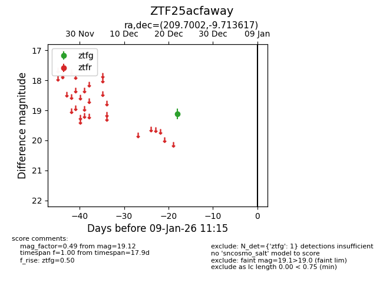
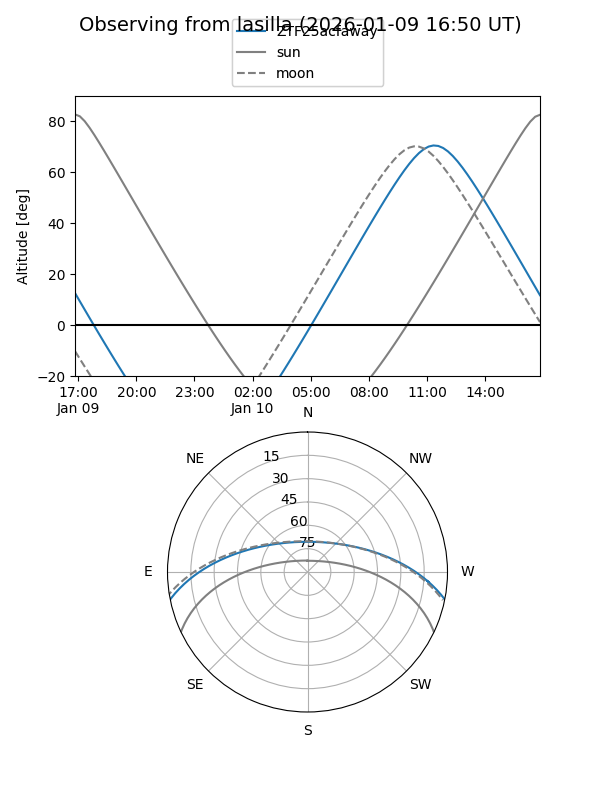
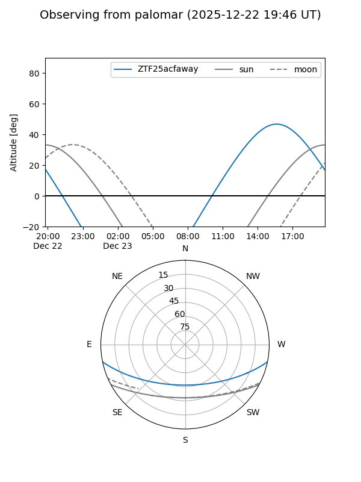

ZTF25acfaway
Target ZTF25acfaway at 2025-12-22 21:11
Aliases and brokers:
FINK: fink-portal.org/ZTF25acfaway
Lasair: lasair-ztf.lsst.ac.uk/objects/ZTF25acfaway
ALeRCE: alerce.online/object/ZTF25acfaway
alt names
ZTF25acfaway (ztf,fink_ztf)
Coordinates:
equatorial (ra, dec) = 209.7002,-9.71362
equatorial (HMS+DMS) = 13:58:48.05,-09:42:49.02
galactic (l, b) = (329.1319,+49.70036)
Flags:
Photometry:
last ztfg=19.12
1 ztfg detections
Lightcurve

Visibility


Additional plots